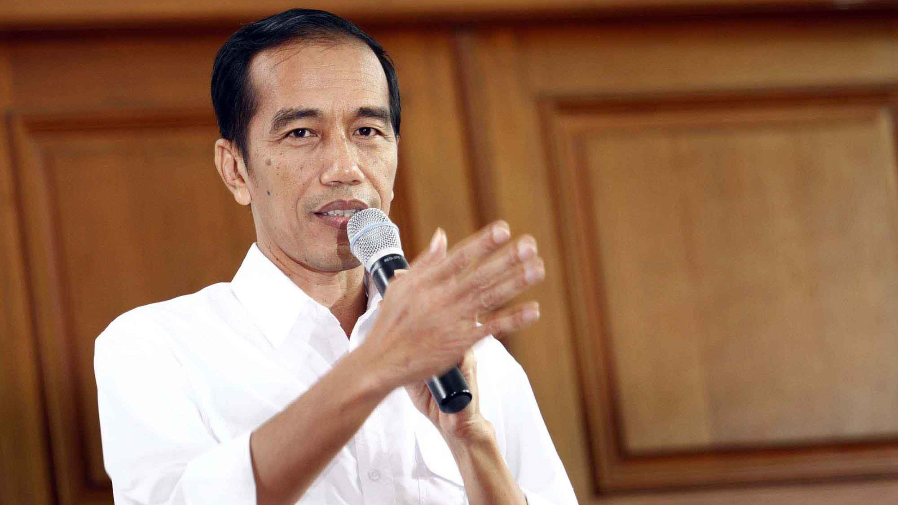

Presiden Jokowi
Ir. H. Joko Widodo atau Jokowi (lahir di Surakarta, Jawa Tengah, 21 Juni 1961; umur 57 tahun) adalah Presiden ke-7 Indonesia yang mulai menjabat sejak 20 Oktober 2014. Ia terpilih bersama Wakil Presiden Muhammad Jusuf Kalla dalam Pemilu Presiden 2014.
Jokowi pernah menjabat Gubernur DKI Jakarta sejak 15 Oktober 2012 sampai dengan 16 Oktober 2014 didampingi Basuki Tjahaja Purnama sebagai wakil gubernur. Sebelumnya, dia adalah Wali Kota Surakarta (Solo), sejak 28 Juli 2005 sampai dengan 1 Oktober 2012 didampingi F.X. Hadi Rudyatmo sebagai wakil wali kota.
Dua tahun menjalani periode keduanya menjadi Wali Kota Solo, Jokowi ditunjuk oleh partainya, Partai Demokrasi Indonesia Perjuangan (PDI-P), untuk bertarung dalam pemilihan Gubernur DKI Jakarta berpasangan dengan Basuki Tjahaja Purnama (Ahok).Joko Widodo berasal dari keluarga sederhana. Bahkan, rumahnya
pernah digusur sebanyak tiga kali, ketika dia masih kecil, tetapi ia mampu menyelesaikan pendidikannya di Fakultas Kehutanan Universitas Gajah Mada. Setelah lulus, dia menekuni profesinya sebagai pengusaha mebel. Karier politiknya dimulai dengan menjadi Wali Kota Surakarta pada tahun 2005. Namanya mulai
dikenal setelah dianggap berhasil mengubah wajah Kota Surakarta menjadi kota pariwisata, kota budaya, dan kota batik. Pada tanggal 20 September 2012, Jokowi berhasil memenangi Pilkada Jakarta 2012. Kemenangannya dianggap mencerminkan dukungan populer untuk seorang pemimpin yang "muda" dan "bersih", meskipun
umurnya sudah lebih dari lima puluh tahun. Semenjak terpilih sebagai gubernur, popularitasnya terus melambung dan menjadi sorotan media. Akibatnya, muncul wacana untuk menjadikannya calon presiden untuk pemilihan umum presiden Indonesia 2014. Ditambah lagi, hasil survei menunjukkan, nama Jokowi terus unggul.
Pada awalnya, Ketua Umum PDI-P, Megawati Soekarnoputri menyatakan bahwa ia tidak akan mengumumkan calon presiden dari PDI Perjuangan sampai setelah pemilihan umum legislatif 9 April 2014. Namun, pada tanggal 14 Maret 2014, Jokowi menerima mandat dari Megawati untuk maju sebagai calon presiden, tiga minggu
sebelum pemilihan umum legislatif dan dua hari sebelum kampanye.
Jokowi memulai masa kepresidenannya dengan meluncurkan Kartu Indonesia Sehat, Kartu Indonesia Pintar, dan Kartu Keluarga Sejahtera. Upaya ini oleh partai oposisi dianggap untuk meredam sementara kenaikan harga BBM. Jokowi dikritik karena meluncurkan program yang tidak memiliki payung hukum dan melanggar tertib anggaran
,namun hal ini dibantah oleh Jusuf Kalla, dengan argumen bahwa program kartu tersebut sebenarnya kelanjutan dari program yang sudah ada sehingga anggarannya pun mengikuti program tersebut.
Mulai tanggal 8 November, ia mengikuti beberapa konferensi tingkat tinggi, seperti APEC, Asian Summit, dan G20. Jokowi menuai kontroversi setelah presentasinya di depan pengusaha di APEC. Sebagian mencerca presentasi ini sebagai upaya menjual negara kepada kepentingan asing, sementara di lain pihak
pidatonya dipuji karena dianggap tepat pada sasaran, dibanding presiden negara lain yang hanya memberi ceramah yang mengambang. Dari APEC, Jokowi berhasil membawa komitmen investasi senilai Rp300 Triliun.
Lambang Kepresidenan

Presiden Indonesia (nama jabatan resmi: Presiden Republik Indonesia) adalah kepala negara sekaligus kepala pemerintahan Indonesia. Sebagai kepala negara, Presiden adalah simbol resmi negara Indonesia di dunia. Sebagai kepala pemerintahan, Presiden dibantu oleh wakil presiden dan menteri-menteri dalam kabinet, memegang kekuasaan eksekutif untuk melaksanakan tugas-tugas pemerintah sehari-hari. Presiden (dan Wakil Presiden) menjabat selama 5 tahun, dan sesudahnya dapat dipilih kembali dalam jabatan yang sama untuk satu kali masa jabatan.
Kata Bijak Presiden Jokowi
Bukan kesulitan yang membuat kita takut, tapi sering ketakutanlah yang membuat jadi sulit.. Jadi, jangan mudah menyerah. [Jokowi]